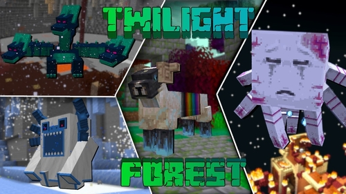
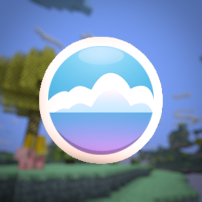
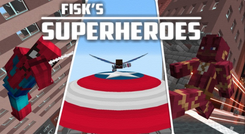

Компьютерная инди-игра в жанре песочницы,
созданная шведским программистом Маркусом Перссоном
и выпущенная его студией Mojang AB. В 2009 году
Перссон опубликовал начальную версию игры;
в конце 2011 года была выпущена стабильная
версия для компьютеров Windows, Linux и macOS
с распространением через официальный сайт.
В последующие годы Minecraft была портирована
на мобильные устройства под управлением Android,
iOS и Windows Phone; на игровые приставки PlayStation 3,
PlayStation 4, PlayStation 5, PlayStation Vita, Xbox 360,
Xbox One, Xbox Series X/S, New Nintendo 3DS,
Nintendo Switch и Wii U; и другие платформы.
В 2014 году корпорация Microsoft приобрела права на Minecraft
вместе со студией Mojang AB за 2,5 миллиарда долларов.
В 2017 году была выпущена мультиплатформенная версия игры,
объединившая различные версии для разных устройств.
Моды
The Twilight Forest
Глобальная модификация добавляющая новое измерение "Сумеречный лес" - темный, заколдованный мир, почти весь покрытый лесом, в котором витает дух приключений и опасности. Здесь вам встретятся множество новых структур, мобов и боссов.
Новые версии мода могут быть несовместимы с OptiFine.

The Aether
Перед нами официальный порт мода Aether I, с которым наряду с Нижним миром и Краем вы сможете отправиться в путешествие по Небесам. Можно будет пройтись по летающим островам, затерянным между облаками, где вам встретятся новые мобы, и отыскать небесные храмы с сокровищами, которые охраняют грозные боссы.

Superheroes by FiskFille
Модификация про супергероев MARVEL и DC Comics! Сам мод насчитывает 40+ костюмов, а в новой версии добавили костюм Доктора Осьминога и несколько костюмов Человека Паука, в том числе и костюм из игр и фильмов! Станьте новым героем этого города.

Новости
Новые функции:
"Добавлены медные украшения"
Медные украшения:
Добавлен медный факел -
Зелёный вариант факела, созданный из медного слитка, угля и палки
Функционально идентичен факелу,
Добавлены медные решётки -
Функционирует как существующий блок «Железные решётки
Изготовлен из меди и со временем окисляется,
Добавлена медная цепь
Функционирует как существующий блок «Цепь» (теперь переименован в «Железная цепь»)
Изготовлен из меди и со временем окисляется
Добавлен медный фонарь
Изготавливается аналогично обычному фонарю, но использует медь и медный факел
Сам фонарь окисляется, меняя свой внешний вид со временем
Функционально идентичен фонарю
Изменения
Блок «Цепь» переименован в «Железная цепь»